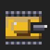

< BACK TO CONQUER GSCONQUER GS · LAST UPDATED: 27 OCTOBER 2026
Conquer GS runs on an Apple IIgs, or in an emulator, and never connects to anything. It does not collect, send or sell any information about you.
Conquer GS is made by Walter Tengler, Rua do Cruzeiro 217, 4910-253 Moledo, Portugal. Email: walter.tengler@gmail.com. See also the legal notice.
Collects nothing. The game has no network code, no accounts, no analytics and no ads. Your choices on the mission setup screen (difficulty, map, music) are kept only in the computer's memory while it runs.
This website (portwally.github.io) is hosted on GitHub Pages and uses GoatCounter for simple, cookie-free page-view counts. GoatCounter does not use cookies or track you across sites. The page loads its fonts from Google Fonts, which receives your IP address to deliver them. GitHub may log technical data such as IP addresses to deliver the site; see GitHub's privacy statement.
Questions about this policy: walter.tengler@gmail.com.